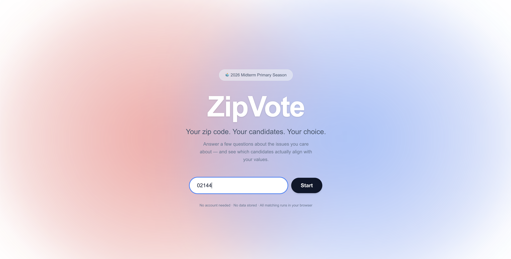
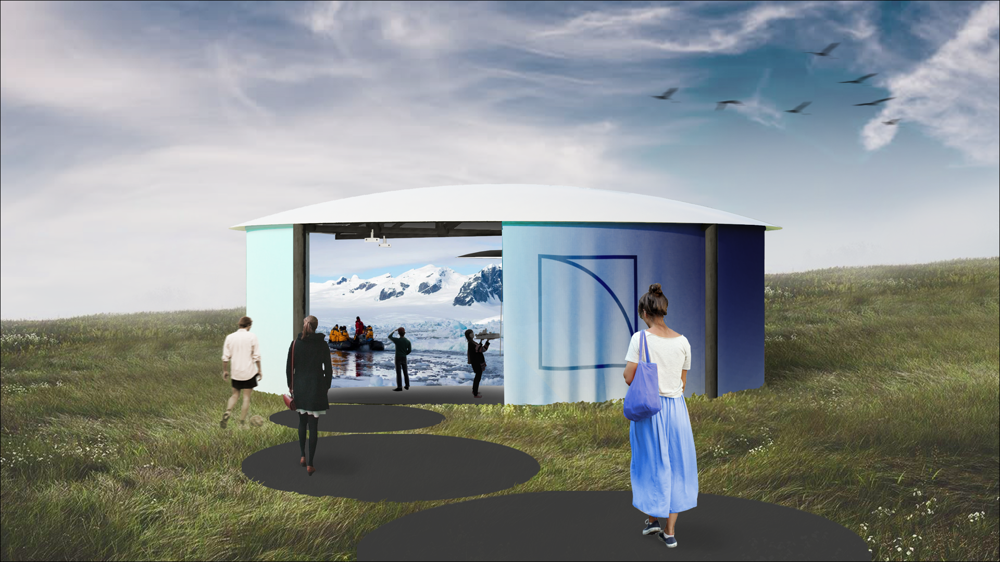

ViGOR: Video-Generated Operative Reporting
Drafting operative notes from surgical video instead of the surgeon's memory.

Clustr
Putting words to the patterns hiding in a messy moodboard.

ZipVote (WIP)
Making local elections less intimidating for first-time voters.

Summit Media Center
Reimagining how K-12 students learn, starting from how they create.